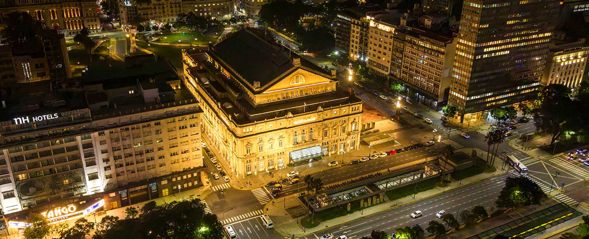
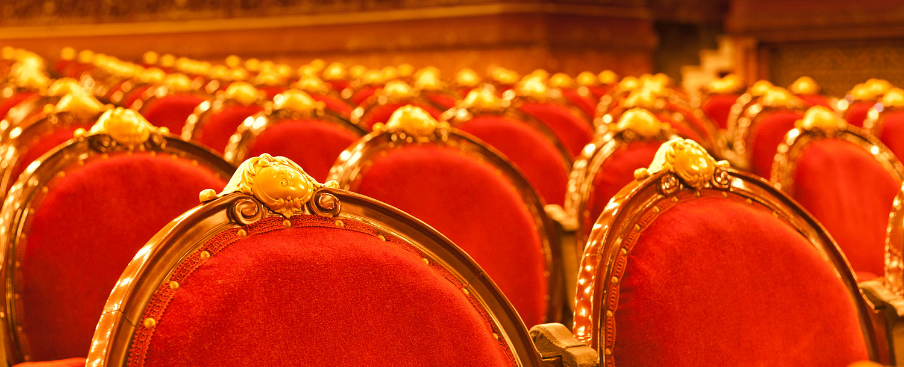
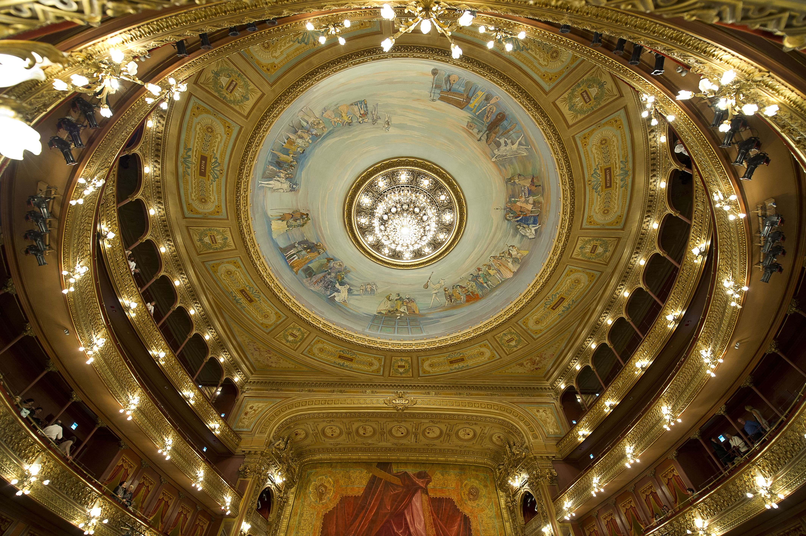

El Teatro Colón y su historia

La sala principal, en forma de herradura, cumple con las normas más severas del teatro clásico italiano y francés. La planta está bordeada de palcos hasta el tercer piso. La herradura tiene 29,25 metros de diámetro menor, 32,65 metros de diámetro mayor y 28 metros de altura. Tiene una capacidad total de 2.478 localidades, pero también pueden presenciar los espectáculos alrededor de 500 personas de pie. La cúpula, de 318 metros cuadrados, poseía pinturas de Marcel Jambon, que se deterioraron en los años treinta. En la década de 1960 se decidió pintar nuevamente la cúpula y el trabajo le fue encargado al pintor argentino Raúl Soldi, que la inauguró en 1966.
El escenario posee una inclinación de tres centímetros por metro y tiene 35,25 metros de ancho por 34,50 de profundidad, y 48 metros de altura. Posee un disco giratorio de 20,30 metros de diámetro que puede accionarse eléctricamente para girar en cualquier sentido y cambiar rápidamente las escenas. En 1988, se realizaron trabajos de modernización de la maquinaria escénica en el sector de las parrillas, con el fin de facilitar el manejo de los decorados y agilizar los cambios de escena.
El foso de la orquesta posee una capacidad para 120 músicos. Está tratado con cámara de resonancia y curvas especiales de reflexión del sonido. Estas condiciones, las proporciones arquitectónicas de la sala y la calidad de los materiales contribuyen a que el Teatro Colón tenga una acústica excepcional, reconocida mundialmente como una de las más perfectas.
Reformas y arquitectura del edificio
La construcción del nuevo edificio llevó alrededor de 20 años, siendo colocada su piedra fundamental el 25 de mayo de 1890, con la intención de inaugurarlo antes del 12 de octubre de 1892 en coincidencia con el cuarto centenario del descubrimiento de América. El proyecto inicial fue del arquitecto Francesco Tamburini quien, a su muerte en 1891, fue continuado y modificado por su socio, el arquitecto Víctor Meano, autor del palacio del Congreso Nacional. Las obras avanzaron hasta 1894, pero se estancaron luego por cuestiones financieras. En 1904, tras la muerte de Meano, el gobierno encargó al belga Jules Dormal que termine la obra. Dormal introdujo algunas modificaciones estructurales y dejó definitivamente impreso su sello en el estilo francés de la decoración.

">El Teatro Colón dentro de la cultura
El Teatro Colón es uno de los espacios culturales más importantes de la Ciudad de Buenos Aires y uno de los teatros de ópera más reconocidos del mundo. Se encuentra ubicado cerca de la Avenida 9 de Julio y es considerado un símbolo de la cultura argentina.
A lo largo de su historia, el Teatro Colón recibió la visita de importantes músicos, directores y bailarines de diferentes partes del mundo. Grandes artistas internacionales se presentaron en su escenario, convirtiéndolo en un punto central de la actividad cultural porteña.
Además de las funciones de ópera y ballet, el teatro ofrece conciertos, visitas guiadas y actividades educativas para el público. Muchas personas visitan el lugar para conocer su historia y apreciar su valor artístico y arquitectónico.

El Teatro Colón cumple un papel fundamental en la difusión de la cultura en Buenos Aires. Su presencia fortalece la importancia de las artes escénicas dentro de la ciudad y atrae tanto a turistas como a amantes de la música y el espectáculo.
Actualmente, el Teatro Colón continúa siendo uno de los principales centros culturales de Argentina. Su prestigio internacional y su larga trayectoria lo convierten en uno de los lugares más emblemáticos de la cultura de Buenos Aires.